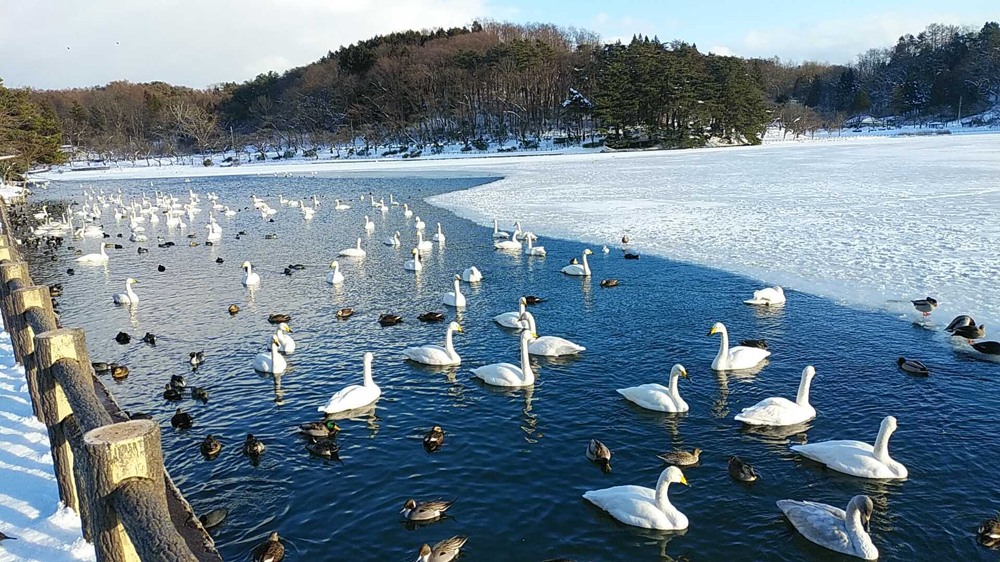

高松の池

高松の池は高松公園の中にある大きな池です。
池の周辺には800本もの桜が植えられており、日本の桜名所100選に選ばれたことがあるほどで、見頃になるととても綺麗です。
秋には紅葉が見れて、冬には数百羽の白鳥が飛んで来ることもあり春夏秋冬違った景色が見られます。


店舗情報
| 店名 | 高松の池 | |
|---|---|---|
| 営業時間 | 24時間営業 | |
| 料金 | 無料 | |
| 住所 | 〒020-0114 岩手県盛岡市高松１丁目２６−１
|
|
| 交通手段 | 岩手県盛岡市清水町13-46 盛岡駅からバス「水道橋行」に乗り「下ノ橋町」で下りて徒歩5分 | |
| 備考 | 桜：4月中旬～4月下旬、紅葉：10月中旬～11月上旬、白鳥：11月上旬～3月下旬 駐車場あり(平日は夕方まで、土日は終日あいてます) |
|